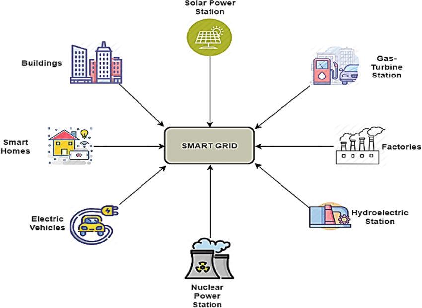
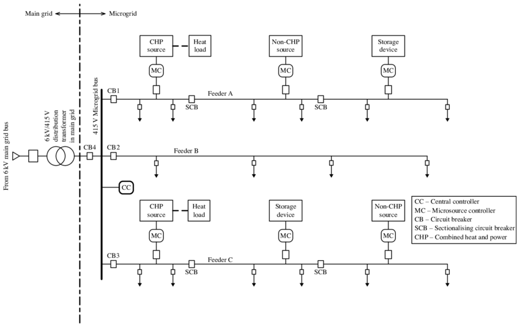
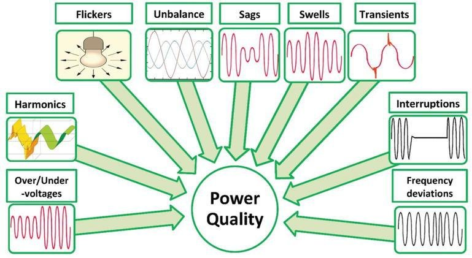

A smart grid is an intelligent, automated electrical grid that uses digital communication technology to detect and react to local changes in usage. It improves reliability, efficiency, and sustainability of electricity services.
🚀 2. Key Features of Smart Grids
Self-Healing: Detects and responds to faults automatically
Consumer Participation: Real-time data allows consumers to adjust usage
Renewable Integration: Supports DER like solar and wind
Cybersecurity: Secured communication networks
📡 3. Core Technologies
Advanced Metering Infrastructure (AMI): Enables real-time metering and communication
Phasor Measurement Units (PMU): Provides synchronized voltage and current measurements
SCADA: Supervisory Control and Data Acquisition for remote monitoring
EV Integration: Electric vehicle charging stations connected to grid

📊 4. Demand Response & Forecasting
Demand Response: Consumers reduce or shift electricity usage during peak periods
Load Forecasting: Predicting future demand using AI, ML and historical data
🏘️ 5. Microgrids & DER
Microgrids are small, localized grids that can operate independently or in conjunction with the main grid. DER (Distributed Energy Resources) include rooftop solar, batteries, etc.

⚠️ 6. Power Quality Issues
Voltage Sags: Temporary drop in voltage
Swells: Temporary increase in voltage
Harmonics: Distortion in waveform due to non-linear loads
Flicker: Rapid voltage fluctuations affecting lighting
Transients: High frequency short duration events
🛠️ 7. Mitigation Techniques
Surge Protectors: Protect from transients
Voltage Regulators: Stabilize voltage levels
Harmonic Filters: Remove unwanted harmonics
UPS: Uninterruptible Power Supply for critical loads

🎬 8. Interactive Smart Grid Flow
📘 Quiz
Q1: What is AMI?
Answer: Advanced Metering Infrastructure — allows two-way communication for metering and control.
Q2: Name one power quality issue caused by nonlinear loads.
Answer: Harmonics
Q3: What is the function of a UPS?
Answer: To provide backup power and maintain voltage stability during outages.